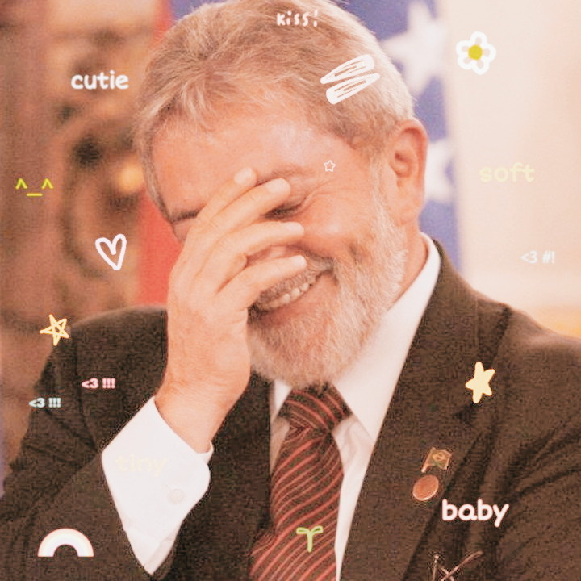

Alice Kaliane
Uma jovem de 17 anos com poucas aspirações, mas um deseja se tornar uma super pop star e cantar assim como sua idolo Barbie no filme Barbie, a princesa e a Pop Star. Seus hobbies incluem ler, chorar, filosofar com seus amigos, e nas horas vagas assiste algumas séries.
João Victor
Um rapaz que busca desenvolvimento constante e em contrapartida é preguiçoso, adora esportes e jogos, curte matemática e suas amizades